| 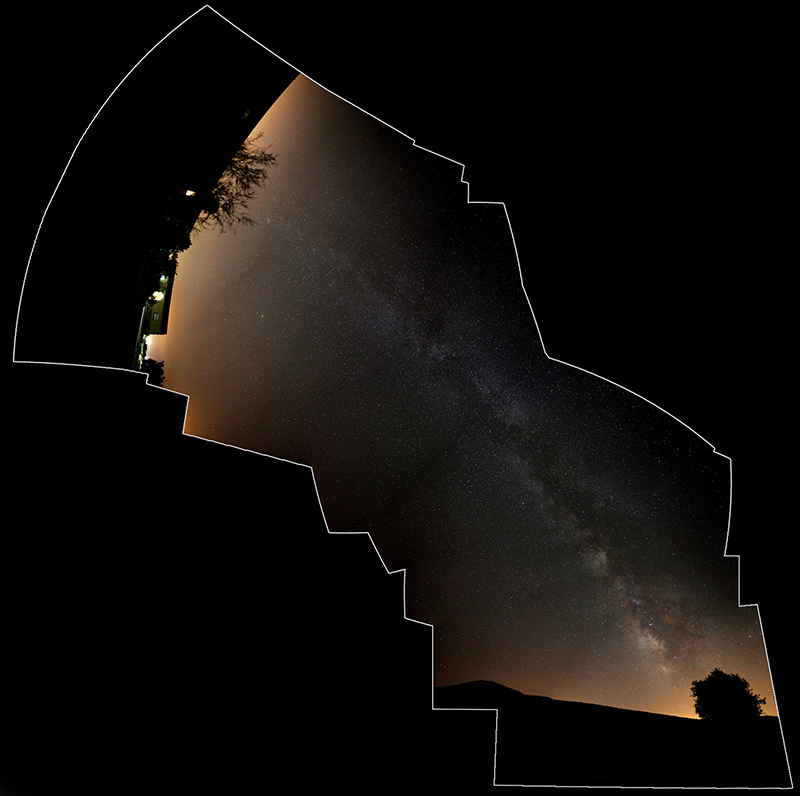 |
{kind=link}
Apart from trying to take pictures of things on Earth every once in a while, I love the idea of pointing a camera to the sky and capturing photons that have traveled unimaginable distances. Although I have never had a telescope myself, every now and then I get to point the camera at clear skies (or even better, use a telescope as a lense!). Here are some results of those experiments
In March 2013, Comet C/2011 L4 (PANSTARRS) got close to Earth and became visible with the naked eye from the
Northern hemisphere. Luckily, I was working on my PhD at the European Space Astronomy Center (ESAC) at the time,
where the Center for Astrobiology (one of the institutes in the ESAC complex) had a 9.25” Celestron telescope and
kindly let me play with it.
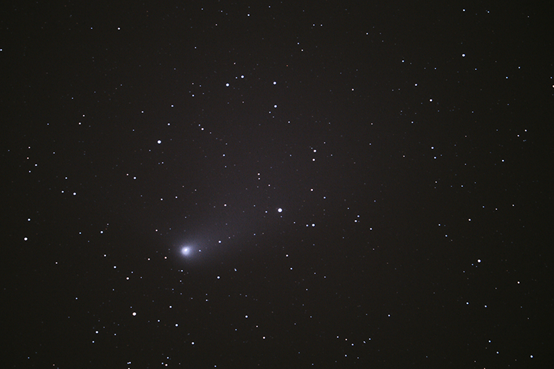 PANSTARRS, 2 minutes exposure
{kind=link}
 Animation
of PANSTARRS moving through the sky. If you don´t see it moving, click on the image!
Animation
of PANSTARRS moving through the sky. If you don´t see it moving, click on the image!
After the PANSTARRS experience, I started using the telescope to try capture other objects in the sky. Here are
some of the pictures I took (click on the images to enlarge them).
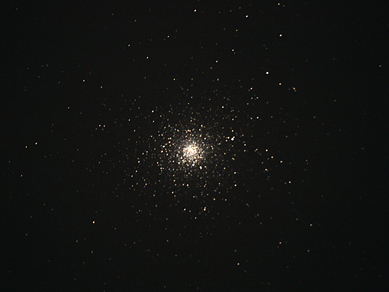 M5 globular cluster
{kind=link}
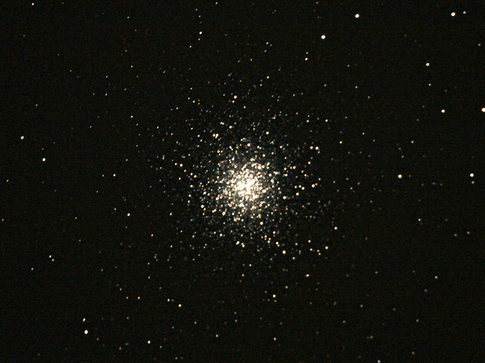 M13, Hercules globular cluster
{kind=link}
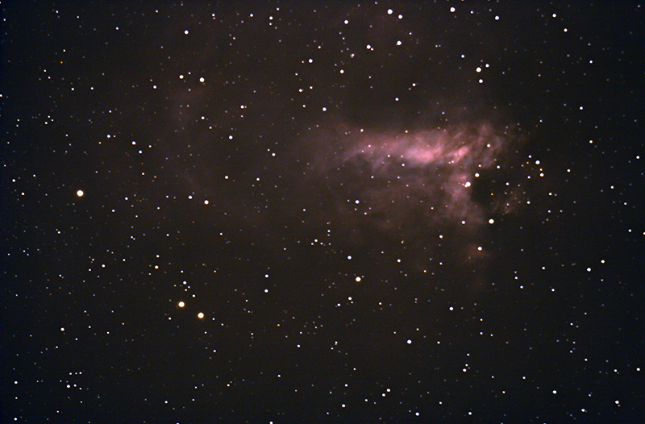 M17, Omega Nebula
{kind=link}
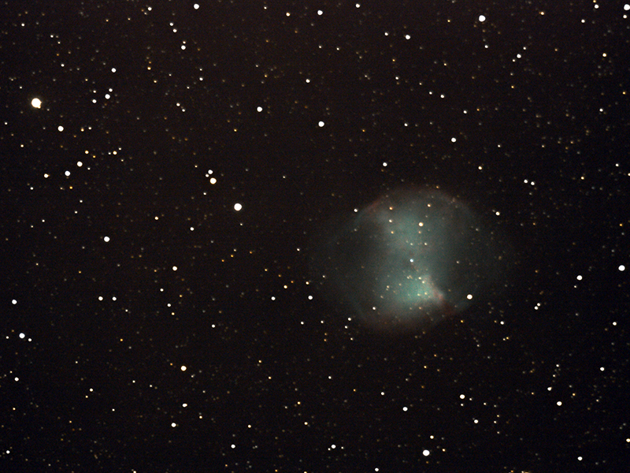 M27, Dumbbell Nebula
{kind=link}
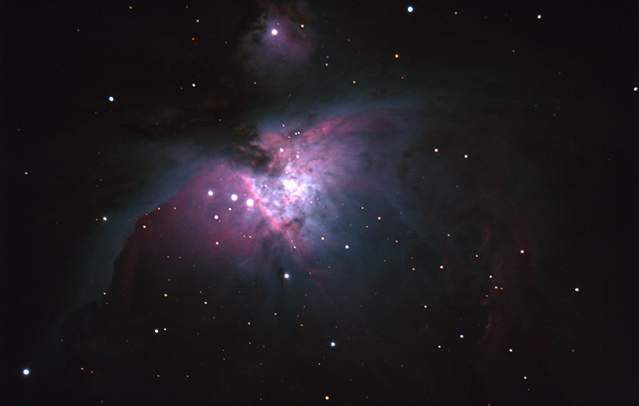 Orion Nebula
{kind=link}
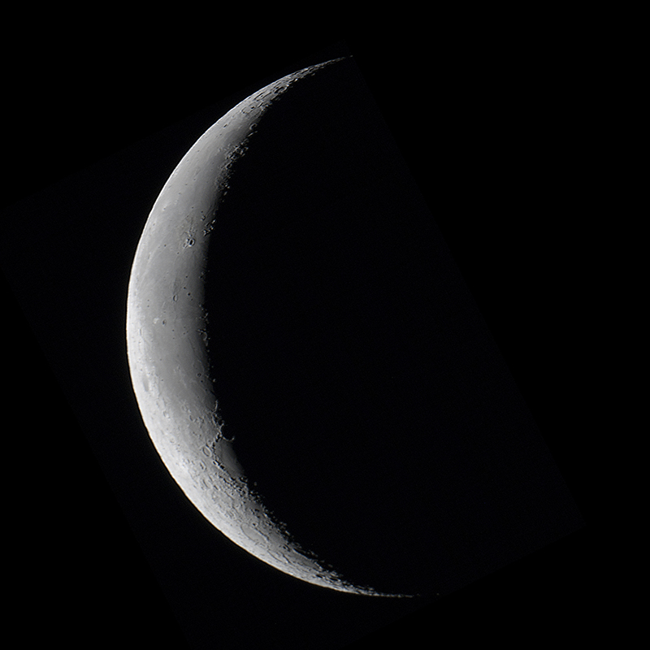 Moon terminator
{kind=link}
However, my best astrophotography attempt so far happended during a remote observing run with the Discovery Channel
Telescope, in Arizona. This is a 4.3 meter telescope that is typically used for science observations, but at the
very end of the night the clouds came in and covered our target. While waiting, I decided to target some beautiful
objects in the night sky. The colors in the images are the result of combining observations at different
wavelengths.
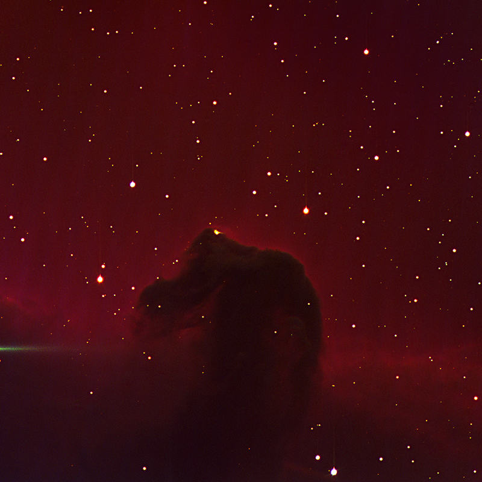
Horsehead Nebula
{kind=link}
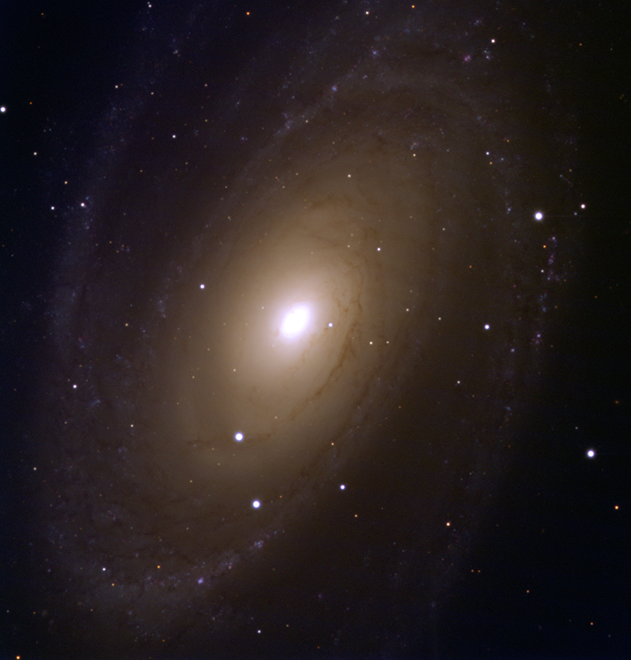
M81
{kind=link}
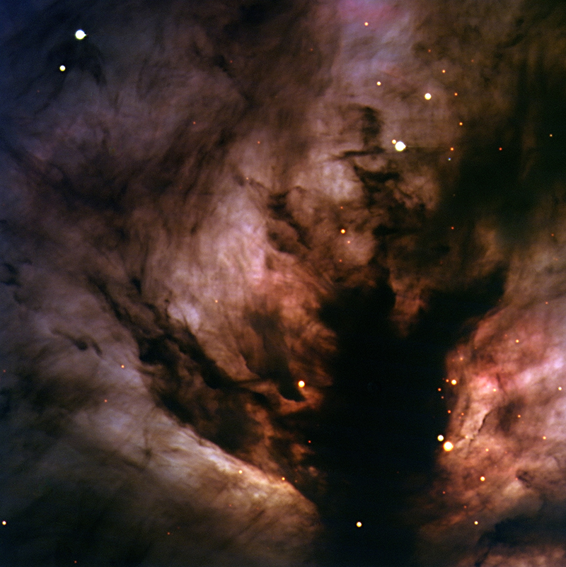
Flame Nebula
{kind=link}